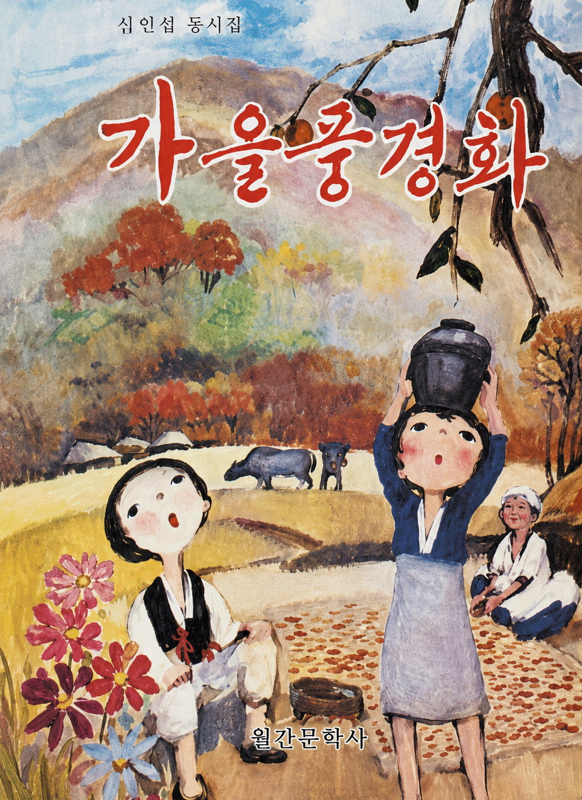
글 심인섭
출판사 : 월간문학사
출간일 : 1981년 10월 30일
사진 출처 : 세이북_가을풍경화-심인섭 동시집
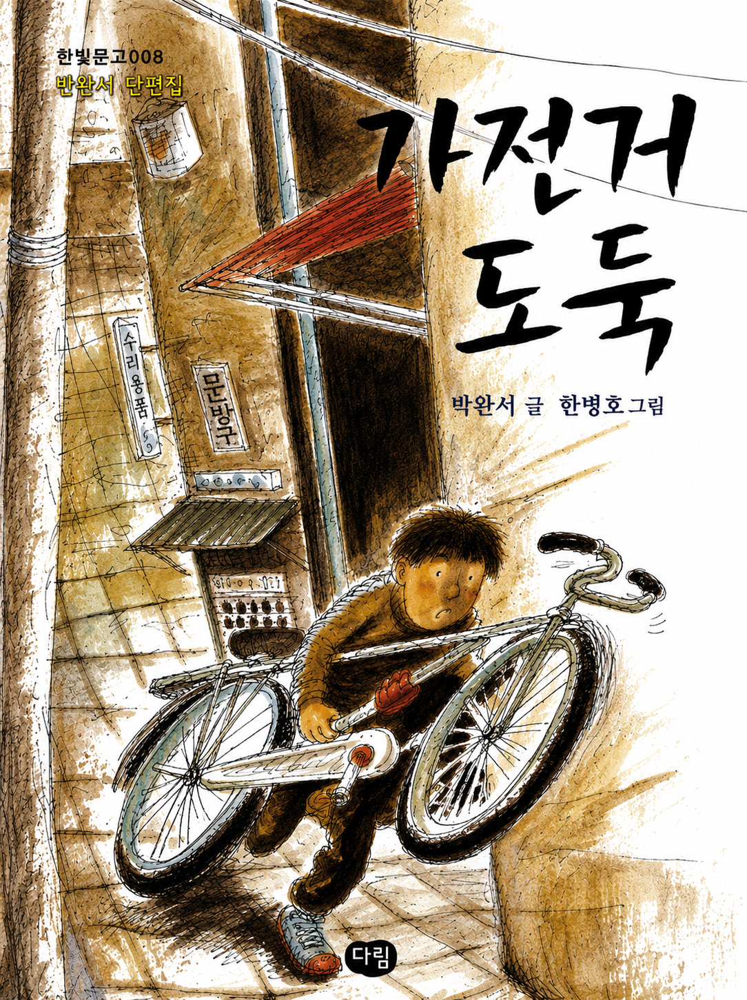
글 박완서 / 그림 한병호
출판사 : 다림
출간일 : 1999년 12월 20일
사진 출처 : 교보문고_자전거도둑
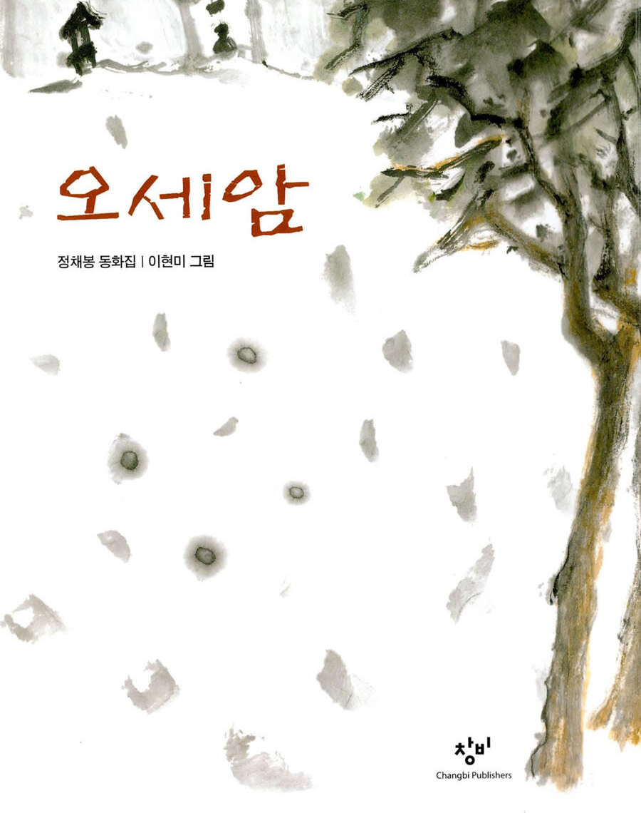
글 정채봉 / 그림 이현미
출판사 : 창비
출간일 : 1990년 11월 25일
사진 출처 : 알라단_[중고]오세암
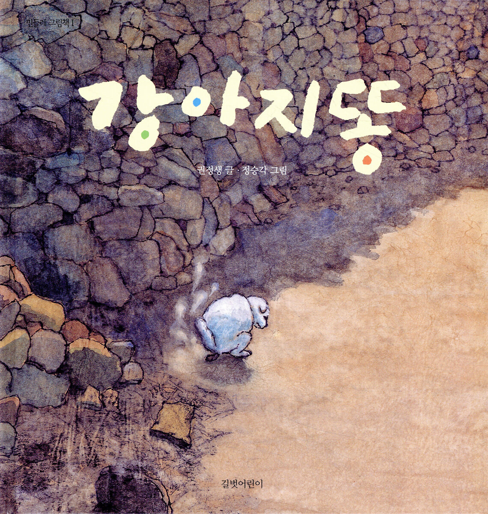
글 권정생 / 그림 정승각
출판사 : 길벗어린이
출간일 : 1996년 4월 1일
사진 출처 : 예스24_강아지똥
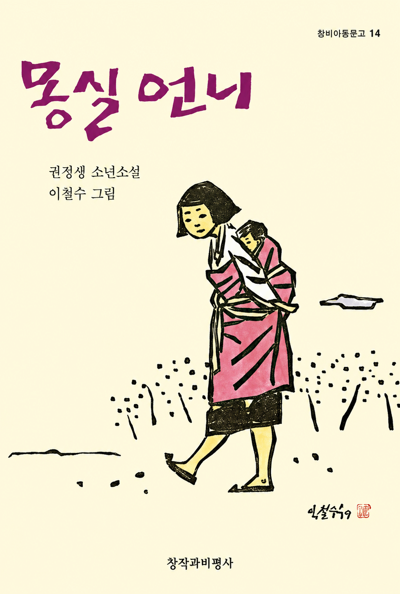
글 권정생 / 그림 이철수
출판사 : 창비
출간일 : 1984년 4월 1일
사진 출처 : 예스24_몽실언
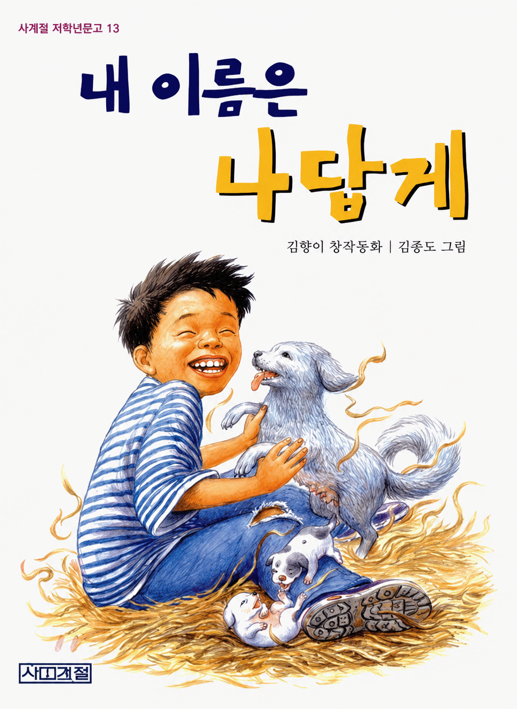
글 김향이 / 그림 김종도
출판사 : 사계절
출간일 : 1999년 5월 31일
사진 출처 : 예스24_내 이름은 나답
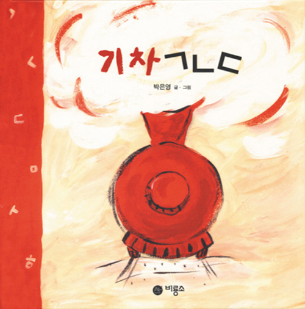
글,그림 박은영
출판사 : 비룡소
출간일 : 1997년 4월 20일
사진 출처 : 비룡소_기차ㄱㄴ
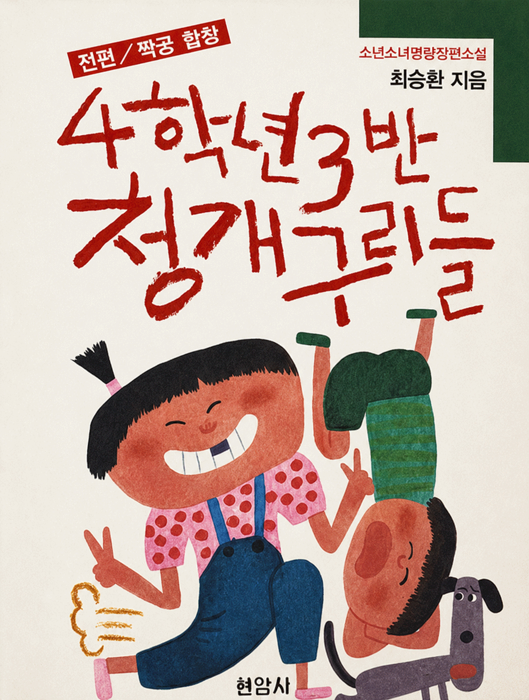
글 최승환
출판사 : 현암사
출간일 : 1989년 9월 5일
사진 출처 : 세이북_4학년3반 청개구리들
(전편)- 최승환 명랑장편소설
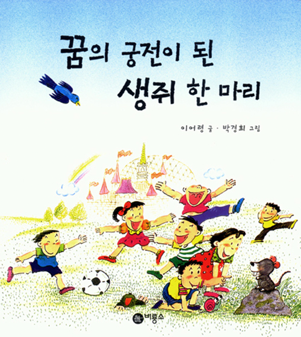
글 이어링 / 그림 박경희
출판사 : 비룡소
출간일 : 1994년 9월 15일
사진 출처 : 비룡소_꿈의 궁전이 된 생쥐 한 마리
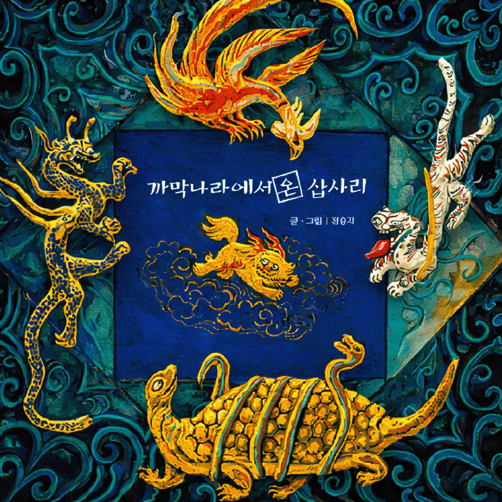
글,그림 정승각
출판사 : 초방책
출간일 : 1994년 3월 1일
사진 출처 : 알라딘_까막나라에서 온 삽사리
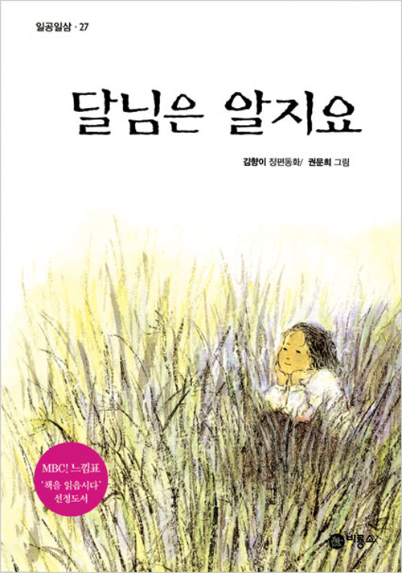
글 김향이 / 그림 권문희
출판사 : 비룡소
출간일 : 1994년 10월 10일
사진 출처 : 비룡소_달님은 알지
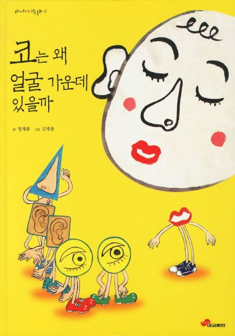
글 정채봉 / 그림 김병종
출판사 : 대교출판
출간일 : 1999년 12월 15일
사진 출처 : 교보문고_코는 왜 얼굴 가운데 있을
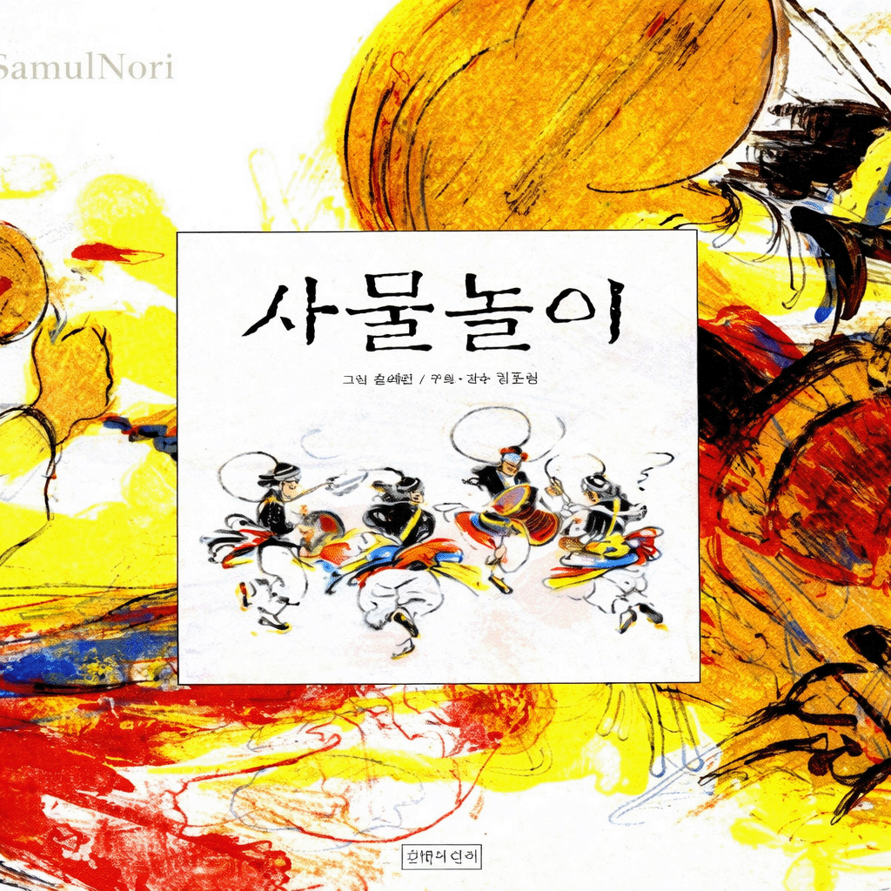
글 김동원 / 그림 조혜란
출판사 : 길벗어린이
출간일 : 1998년 4월 20일
사진 출처 : 알라딘_사물놀이
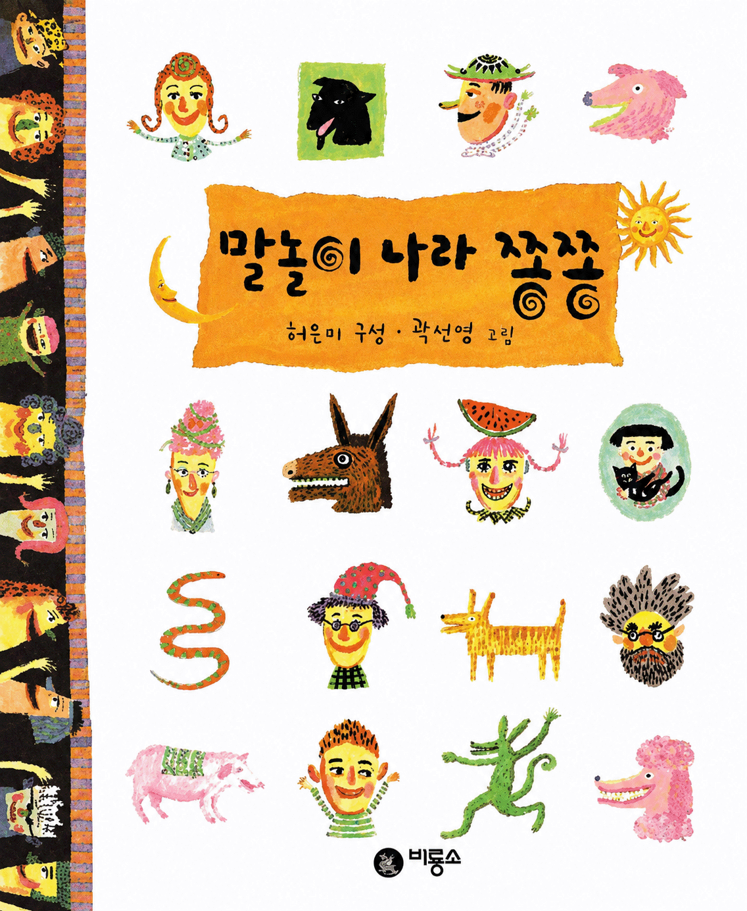
글 허은미 / 그림 곽선영
출판사 : 비룡소
출간일 : 1998년 7월 1일
사진 출처 : 비룡소_말놀이 나라 쫑쫑